Reproducing key results from Kingma & Ba (ICLR 2015)
Gurman Basran & Qusai Quresh
University of Lethbridge, Winter 2026
April 2, 2026
5 optimizers implemented from scratch in NumPy · 5 experiments · PyTorch validation
Two problems we ran into in class, and what motivated Adam
In gradient descent, we use a single $\alpha$ (step-size) for every parameter. If the landscape is stretched out in one direction (high $\kappa$ (condition number)), GD zigzags back and forth across the narrow direction and barely makes progress along the wide direction.
From class (Theorem 3.4): the convergence rate of steepest descent is $\frac{\kappa - 1}{\kappa + 1}$. If $\kappa = 2500$, thats $\frac{2499}{2501} \approx 0.999$, meaning each step only reduces the error by 0.1%.
In machine learning we dont compute the gradient on ALL the data. We use a small random minibatch (128 samples out of 60,000), so $g_t$ (the gradient estimate) is noisy. That makes the zigzag even worse.
Methods like Newtons method and BFGS from class dont work here because they need exact gradients and store an $n \times n$ matrix ($O(n^2)$ memory), which is impossible with millions of parameters.
Adam = Momentum + Adaptive Learning Rates + Bias Correction
Keep a running average of the gradient direction. Smooths out noise so you move steadily.
$$m_t = \beta_1 \cdot m_{t-1} + (1 - \beta_1) \cdot g_t$$Track how volatile each parameter is. Big gradients get smaller steps; small gradients get bigger steps.
$$v_t = \beta_2 \cdot v_{t-1} + (1 - \beta_2) \cdot g_t^2$$Kingma & Ba (2015), page 2. Every line explained.
Line 8 is the key: $\hat{m}_t$ (bias-corrected momentum) tells us the direction. $\sqrt{\hat{v}_t}$ (root of bias-corrected scale) normalizes by magnitude. The ratio $\hat{m}_t / \sqrt{\hat{v}_t}$ gives each parameter its own effective step size. The paper shows each step is approximately bounded by $\alpha$ (step-size), which is the trust region property.
The gradient splits into two paths, then recombines for the update
The gradient gets split into two separate streams of information: $\hat{m}_t$ (corrected momentum) captures the direction to go, and $\sqrt{\hat{v}_t}$ (root of corrected scale) captures the magnitude to normalize by. When we divide direction by magnitude, each parameter gets its own appropriately-sized step. This is analogous to what BFGS does with the inverse Hessian $H_k^{-1}$, but Adam does it with just $O(n)$ memory instead of $O(n^2)$.
Algorithm 1 translated line-by-line into Python
class Adam: def __init__(self, lr=0.001, beta1=0.9, beta2=0.999, eps=1e-8): self.lr = lr # alpha (step-size) self.beta1 = beta1 # beta_1 (momentum decay) self.beta2 = beta2 # beta_2 (scale decay) self.eps = eps # epsilon (safety) self.m = None # m_t (first moment) self.v = None # v_t (second moment) self.t = 0 # timestep counter def step(self, params, grads): self.t += 1 # line 2 self.m = self.beta1 * self.m \ + (1 - self.beta1) * grads # line 4 self.v = self.beta2 * self.v \ + (1 - self.beta2) * grads ** 2 # line 5 m_hat = self.m / (1 - self.beta1 ** self.t) # line 6 v_hat = self.v / (1 - self.beta2 ** self.t) # line 7 return params - self.lr * m_hat \ / (np.sqrt(v_hat) + self.eps) # line 8
for epoch in range(n_epochs): for X_batch, y_batch in get_minibatches( X_train, y_train, batch_size=128): dW, db, loss = compute_gradients( X_batch, y_batch, W, b) grads = flatten_params(dW, db) params = optimizer.step(params, grads)
def compute_gradients(X, y_true, W, b): y_pred = softmax(X @ W + b) dZ = y_pred - y_true dW = X.T @ dZ / batch_size # clean matrix form db = np.mean(dZ, axis=0) loss = cross_entropy_loss(y_pred, y_true) return dW, db, loss
Reproducing Section 6.1 of the paper: 5 optimizers, 40 epochs, same starting weights
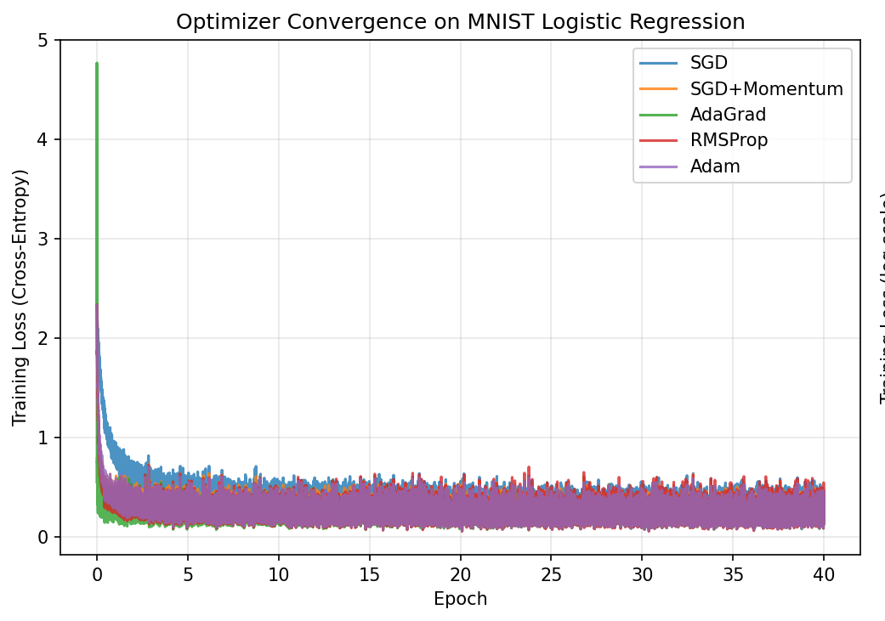
Training loss vs epoch (linear scale)
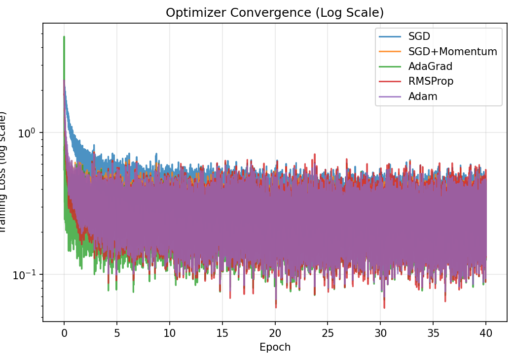
Training loss vs epoch (log scale; stretches out differences at the bottom)
| Optimizer | Test Accuracy | Final Loss |
|---|---|---|
| SGD | 91.58% | 0.321 |
| SGD + Momentum | 92.36% | 0.274 |
| AdaGrad | 92.72% | 0.264 |
| RMSProp | 92.65% | 0.260 |
| Adam | 92.69% | 0.258 |
All adaptive methods beat plain SGD, consistent with the papers trends. The differences between Adam, AdaGrad, and RMSProp are small here because logistic regression is a convex problem. Adam and Momentum converge fastest in the early epochs.
Validating our from-scratch Adam against PyTorchs torch.optim.Adam
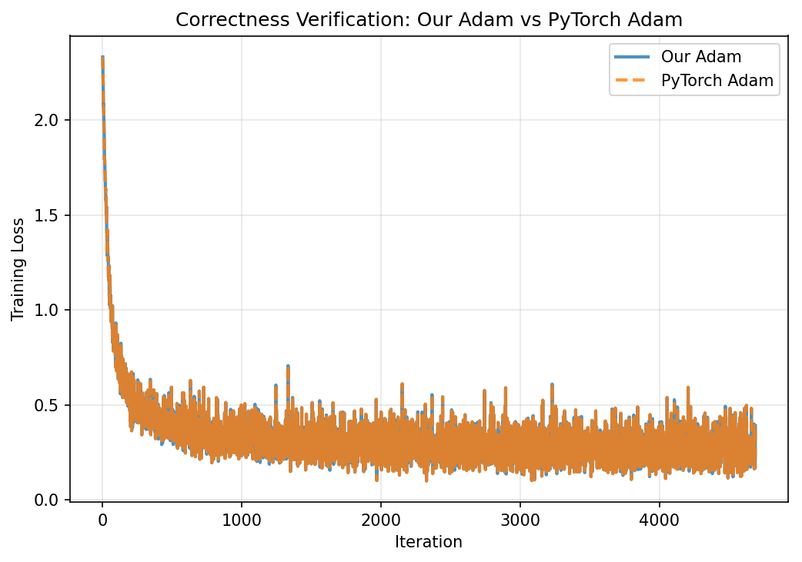
Full run: 4,690 iterations. Both lines overlap perfectly.
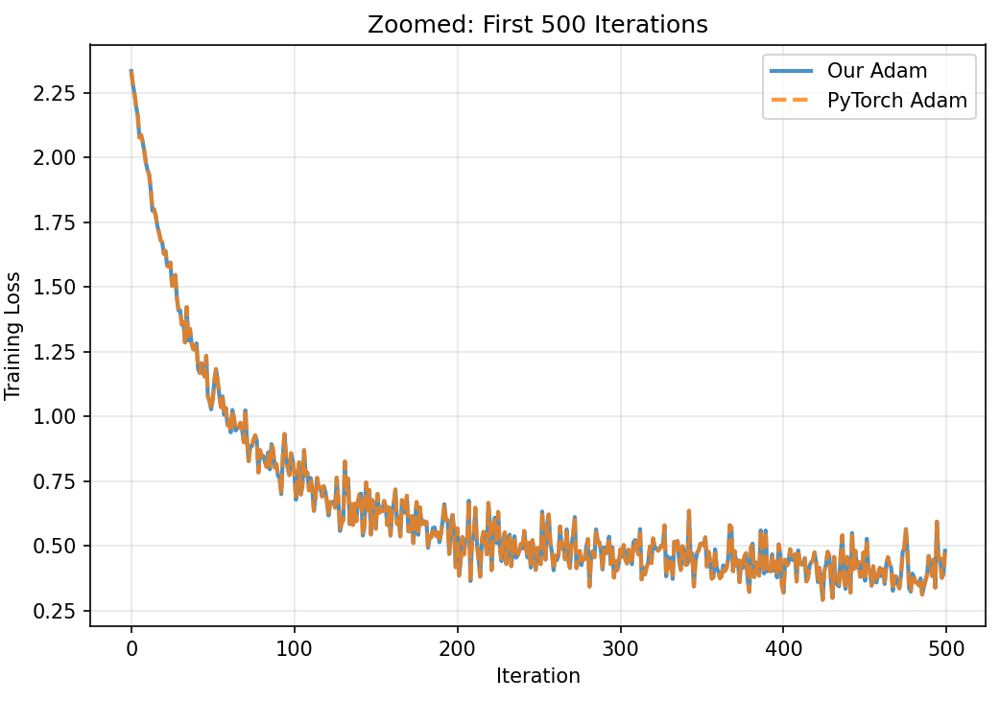
Zoomed: first 500 iterations. Still indistinguishable.
Over 4,690 iterations (10 epochs × 469 batches):
Max absolute loss difference = $6.34 \times 10^{-7}$
The tiny difference comes from floating-point rounding between NumPy and PyTorch, not from an error in our code.
Connecting to our coursework: the same test function from textbook Chapter 3
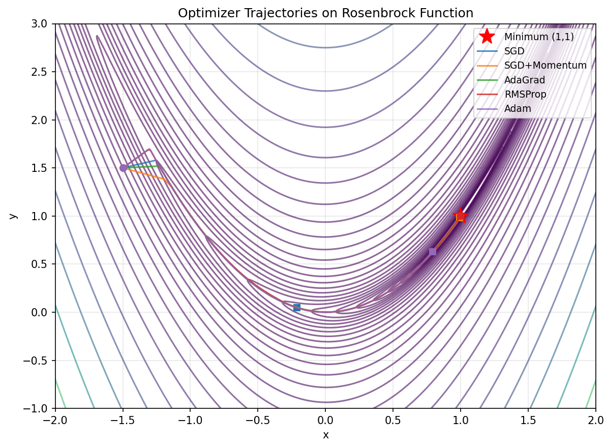
Contour map with optimizer paths. Start: $(-1, 1)$. Target: $(1, 1)$.
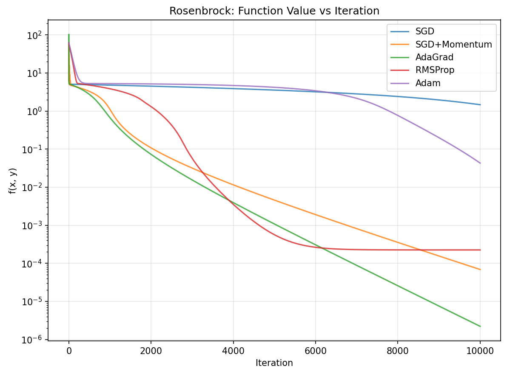
Function value vs iteration (lower is better; $f = 0$ at minimum).
$$f(x,y) = (1-x)^2 + 100(y-x^2)^2$$
Long narrow curved valley. $\kappa \approx 2500$ near minimum.
| Optimizer | Final $f$ value |
|---|---|
| SGD | 1.47 |
| SGD + Momentum | 0.00007 |
| AdaGrad | 0.000002 |
| RMSProp | 0.15 |
| Adam | 0.043 |
Momentum and AdaGrad beat Adam here. Makes sense: Adam was built for noisy gradients, and Rosenbrock gives exact gradients. Plain SGD barely moved (f=1.47), matching the class prediction that steepest descent struggles when $\kappa \approx 2500$ because $(\kappa-1)/(\kappa+1) \approx 0.999$.
Section 6.4 of the paper: which settings matter most?
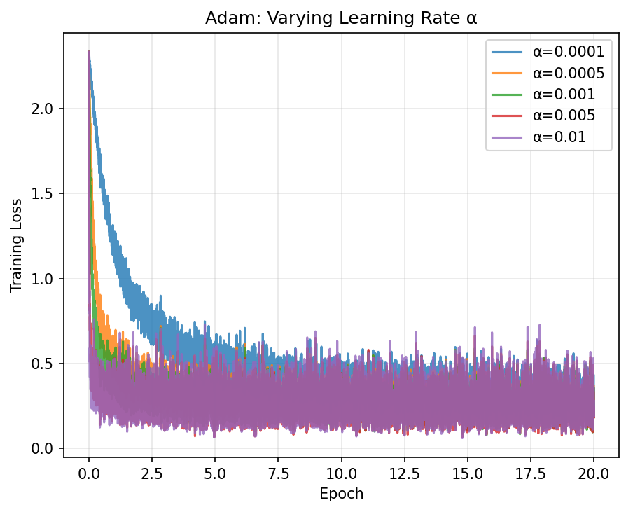
Varying $\alpha$ (step-size): curves spread far apart. HIGH impact.
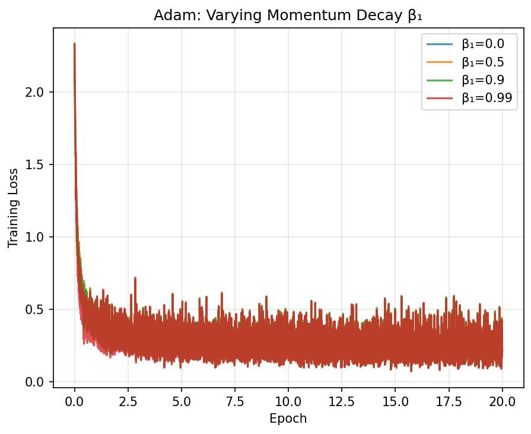
Varying $\beta_1$: tight cluster. Low impact.
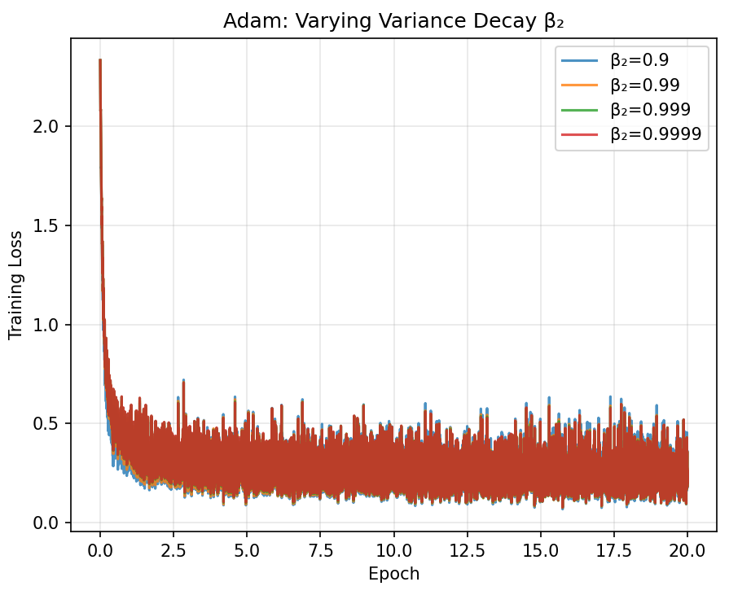
Varying $\beta_2$: tight cluster. Low impact.
| Parameter | Range Tested | Loss Range | Impact |
|---|---|---|---|
| $\alpha$ (step-size) | 0.0001 to 0.005 | 0.209 to 0.267 | HIGH |
| $\beta_1$ (momentum) | 0.0 to 0.99 | 0.210 to 0.215 | LOW |
| $\beta_2$ (scale) | 0.9 to 0.9999 | 0.215 to 0.223 | LOW |
$\alpha$ (step-size) is the one that matters. The $\beta$ values are robust across a wide range, just like the paper claims (Section 6.4). Best result: $\alpha = 0.005$ gave the lowest final loss of 0.209. This is good news: you really only have to tune one hyperparameter.
Section 6.2 of the paper: where Adam really shines
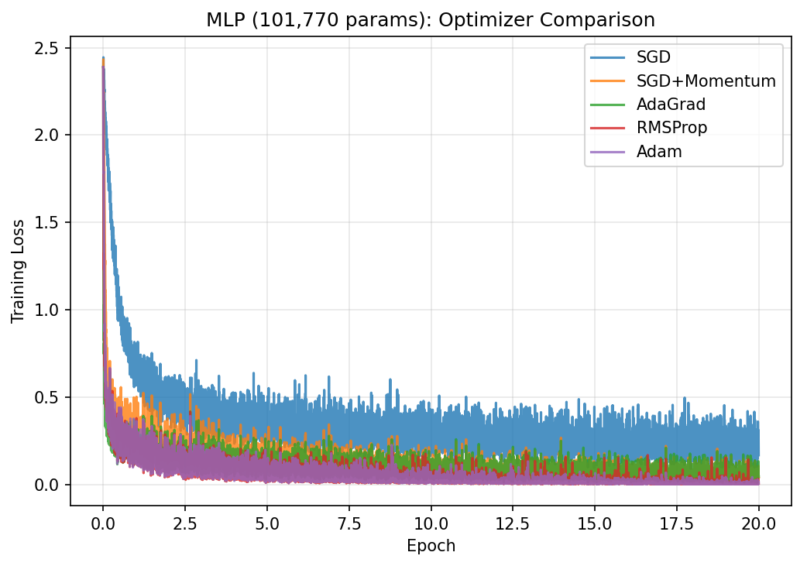
MLP training loss vs epoch (linear scale). Adam drops fastest.
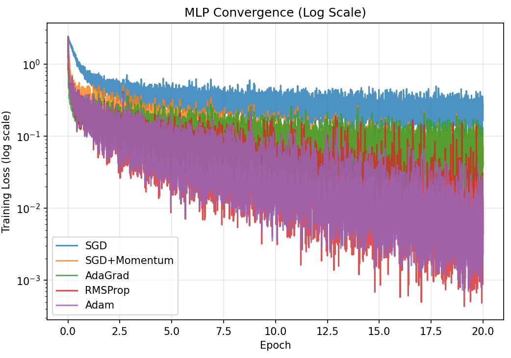
Log scale: Adam and RMSProp clearly separate from SGD.
| Optimizer | Test Accuracy | Gap vs SGD |
|---|---|---|
| SGD | 93.80% | |
| SGD + Momentum | 97.72% | +3.92 |
| AdaGrad | 97.34% | +3.54 |
| RMSProp | 97.92% | +4.12 |
| Adam | 97.97% | +4.17 |
Adam 97.97% vs SGD 93.80% (4+ point gap). Much larger than the ~1 point gap on logistic regression. RMSProp close at 97.92% (Adam = RMSProp + momentum + bias correction). Non-convex + more params = adaptive step sizes matter.
The evolution of step-size strategies we studied in MATH 3850
Nocedal & Wright, Chapter 3
Nocedal & Wright, Chapter 6
Kingma & Ba, 2015
All three methods are doing the same thing: using gradient history to take smarter steps. GD uses just the raw gradient. BFGS builds a full curvature matrix for perfect scaling but needs $O(n^2)$ memory. Adam takes the same concept of "scale the gradient smartly" but uses a diagonal approximation ($\hat{m}_t / \sqrt{\hat{v}_t}$) that only needs $O(n)$ memory. Its like a practical compromise between the simplicity of GD and the intelligence of BFGS, designed for the noisy, high-dimensional world of machine learning.
What we found across five experiments
References: Kingma & Ba (2015), "Adam: A Method for Stochastic Optimization," ICLR. · Ruder (2016), "An overview of gradient descent optimization algorithms." · Nocedal & Wright, Numerical Optimization, 2nd ed.